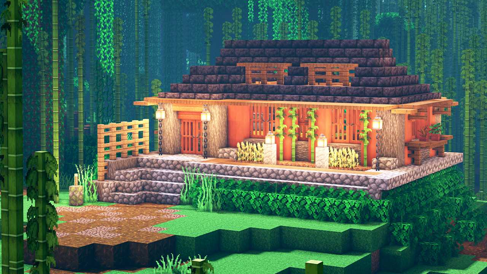
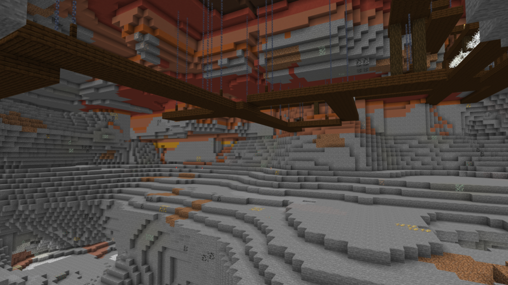
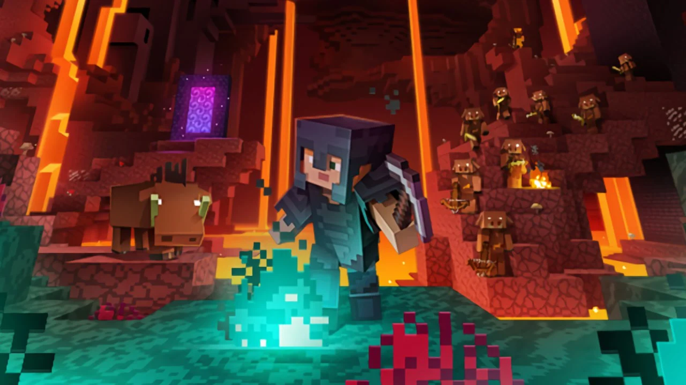
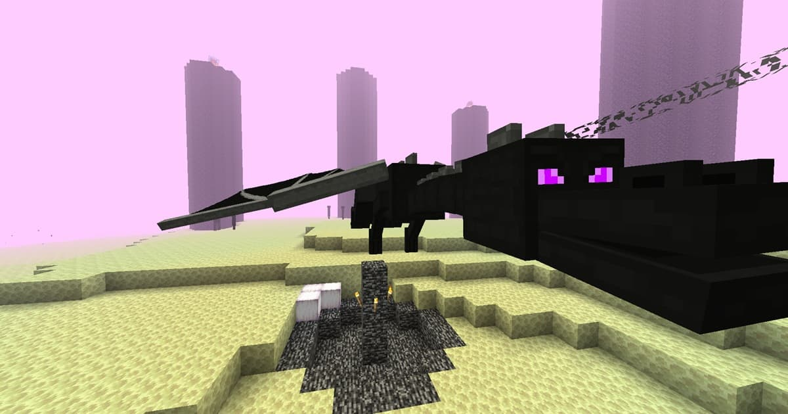
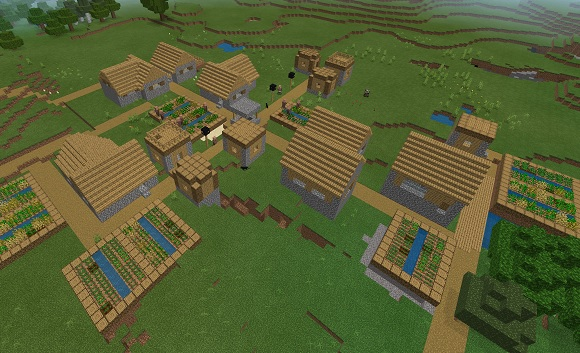
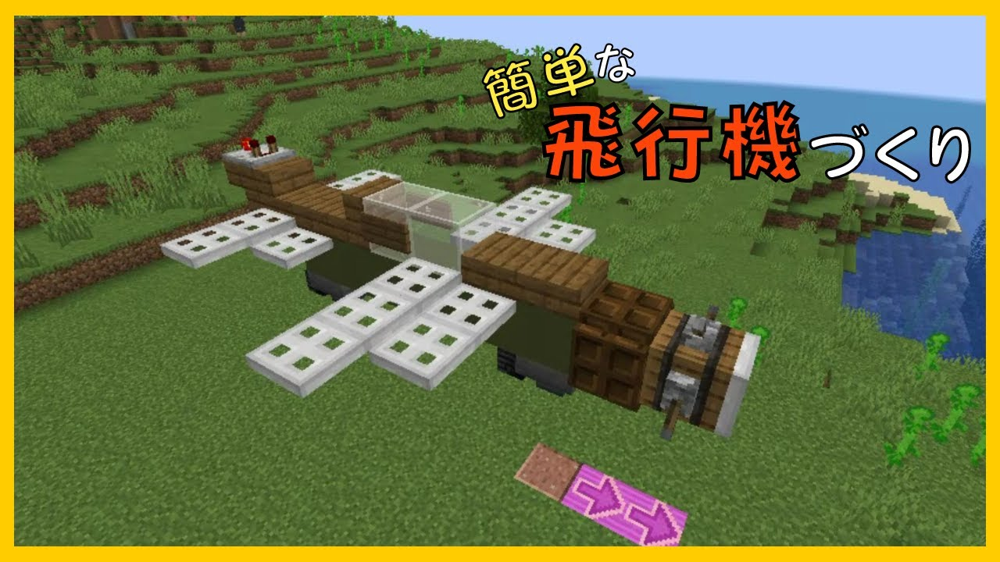

🎲 マインクラフトとは？
マインクラフトはスウェーデンのMojang Studiosが開発したサンドボックスゲームです。無限に生成されるブロックの世界で、採掘、建築、冒険など自由に遊べます。世界中の子どもから大人まで楽しめる人気ゲームです。
🕹️ ゲームモードの種類
- サバイバルモード： 資源を集めて体力と空腹に気をつけながら冒険するモード
- クリエイティブモード： 無限の素材で自由に建築や実験ができるモード
- アドベンチャーモード： 他のユーザー作成のマップでRPGや謎解きが楽しめるモード
- スペクテイターモード： 透明になって自由に飛び回れる観察モード
🔧 レッドストーンでの自動化
レッドストーンは電気信号のように使える素材で、これを使って自動ドアや仕分け機、トラップなどの複雑な装置が作れます。まるでプログラミングのような楽しさがあります。
🏰 建築の楽しみ方
自分だけの家や巨大な城、テーマパークを作ったり、友達と協力して街づくりをしたり、想像力を活かして多彩な建築を楽しめます。内装や外装にこだわるのも人気です。
🧙♂️ 冒険とボス戦
危険なネザーやエンドの世界でボスモンスターを倒し、レアなアイテムをゲット。装備を整えて、挑戦的な冒険を楽しめます。マルチプレイなら協力プレイも盛り上がります。
🖼 スクリーンショットギャラリー
プレイヤーが撮影したマインクラフトの美しい世界をお届けします。冒険のヒントや建築の参考にどうぞ！

🏰 巨大なファンタジー風のお城

⛏️ 深い洞窟の中の鉱石発見

🔥 炎に包まれたネザーの世界

🌌 神秘的なエンドの空中島

🏘️ 村人が暮らす賑やかな村

⚙️ レッドストーンを使った自動装置
これらの画像はマインクラフトの多彩な世界を表しています。建築の参考にしたり、冒険のイメージを膨らませたり、遊び方の幅を広げるヒントがたくさん詰まっています。ぜひあなたも新しい発見を楽しんでください！🌟